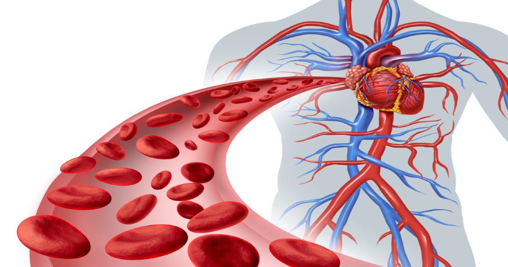

Gessoterapia
A Gessoterapia é uma técnica estética que utiliza o gesso como método terapêutico para modelar e tonificar o corpo. No RRCorpus, oferecemos a gessoterapia com o objetivo de proporcionar uma remodelação corporal eficaz, ajudando a reduzir medidas, combater a celulite e flacidez, e melhorar a aparência da pele.

Benefícios da Gessoterapia:
- Redução de Medidas: Ajuda a diminuir a circunferência de áreas específicas do corpo.
- Combate à Celulite: Melhora a aparência da pele, reduzindo os sinais de celulite.
- Tonificação da Pele: Promove a firmeza e elasticidade da pele, combatendo a flacidez.
- Modelagem Corporal: Define e modela o contorno corporal.
- Melhora da Circulação: Estimula a circulação sanguínea, promovendo uma melhor oxigenação dos tecidos. 


Como é Realizada a Gessoterapia
O procedimento de gessoterapia envolve a aplicação de uma mistura específica de gesso e ativos redutores sobre a pele, seguida por um período de repouso para a secagem do gesso. O tratamento inclui:
- Preparação da Pele: Limpeza e esfoliação da área a ser tratada.
- Aplicação dos Ativos: Produtos específicos são aplicados para potencializar os resultados.
- Enfaixamento com Gesso: O gesso é aplicado sobre a área, promovendo compressão e absorção dos ativos.
- Tempo de Ação: O gesso permanece na pele por um tempo determinado para agir.
- Remoção: Após o tempo de ação, o gesso é removido e a pele é limpa novamente.
Indicações da Gessoterapia
- Redução de medidas em áreas como abdômen, coxas, glúteos e braços
- Combate à celulite
- Tratamento da flacidez cutânea
- Melhoria do contorno corporal
O Que Esperar Durante a Sessão
Durante a sessão de gessoterapia, você pode esperar um atendimento personalizado, focado nas suas necessidades específicas. Nossos profissionais qualificados garantem um tratamento seguro e eficaz. Após a sessão, é comum notar uma melhoria imediata na firmeza e textura da pele.
Agende sua Sessão
Experimente os benefícios da Gessoterapia no RRCorpus. Nossa equipe está pronta para oferecer um atendimento de excelência, focado em proporcionar resultados visíveis e duradouros. Agende sua sessão agora mesmo e sinta a diferença.